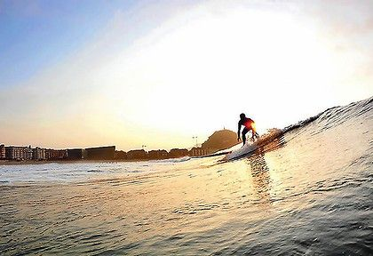
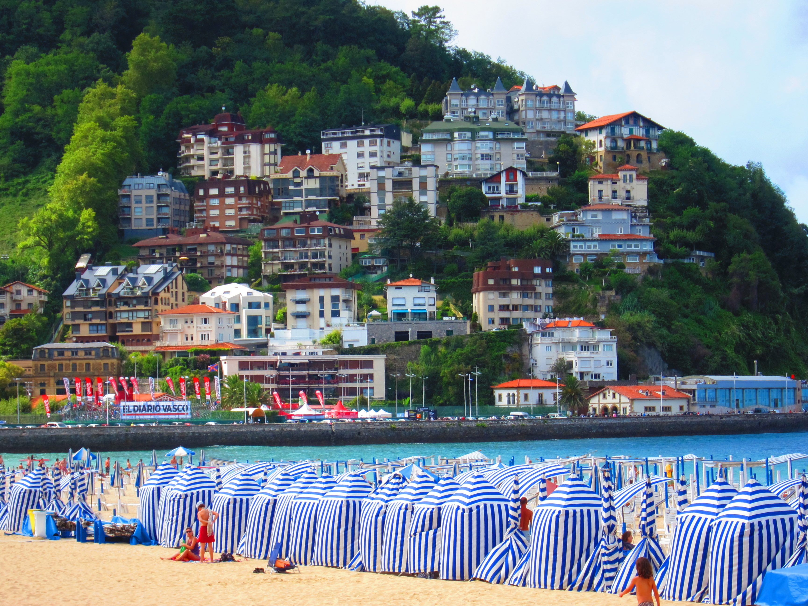
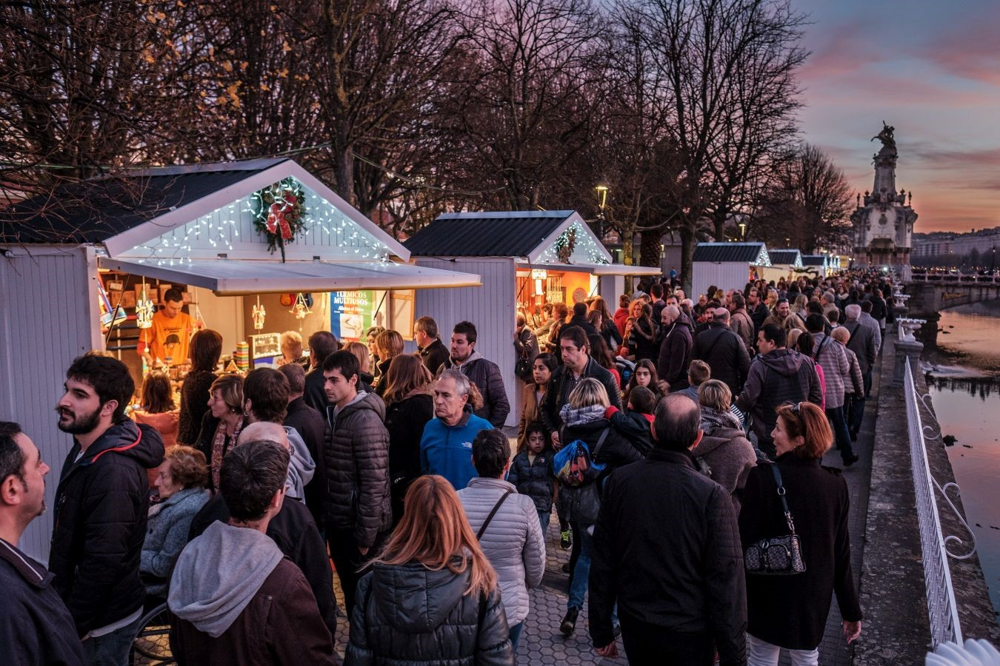

Activities
While many visitors come for the beaches, arts celebrations and fiestas, San Sebastian-Donostia is serious about its food and drink. The Old Quarter’s narrow, winding streets are full of bars and restaurants, and in the modern city, sidewalk cafes are all around. The city specializes in seafood. Just make sure you know not to expect dinner at 6 or 7 p.m.—that’s much too early in Spain. Instead, tide yourself over with tapas, and enjoy eating and drinking late into the night.
  Contact us at the following media
- Facebook @Epicodus_Tripz
- Instagram @Epicodus_Tripz
- Snapchat @Epicodus_Tripz
- Phone: (206)555-4444
- Email: epicodus_tripz@epicodus.com
Look here for more information
We are happy to help you plan your next trip!